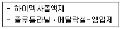

식물보호기사 (2013-06-02 기출문제)
1과목: 식물병리학
1. 다음 중 식물병을 진단할 때 가장 확실한 수단으로 사용하는 사항은?
- 병징
- 환경
- 작물
- 표징
(정답률: 72%)

2. 다음 중에서 식물바이러스에서는 볼 수 없는 형태는?
- 막대모양(rod-shaped)
- 올챙이모양(tadpole-shaped)
- 실모양(filamentous)
- 공모양(spherical)
(정답률: 81%)
3. Viroid 라는 병원체가 처음 밝혀지게 된 식물의 병은?
- 옥수수왜화병
- 감자걀쭉병
- 뽕나무오갈병
- 배나무불마름병
(정답률: 82%)
4. 잣나무 털녹병의 전염경로를 포자형으로 바르게 설명한 것은?
- 잣나무 하포자 → 송이풀 동포자 → 송이풀 하포자 → 잣나무에 침입
- 잣나무 담자포자(소생자) → 송이풀 하포자 → 송이풀 동포자 → 잣나무에 침입
- 잣나무 녹포자 → 송이풀 하포자 → 송이풀 녹포자 → 송이풀 동포자 → 잣나무에 침입
- 잣나무 녹포자 → 송이풀 하포자 → 송이풀 동포자 → 송이풀 담자포자(소생자) → 잣나무에 침입
(정답률: 79%)
5. 다음 중 불완전균류의 특징은?
- 생육이 불완전하다.
- 균사를 갖지 않는다.
- 유성 세대가 알려져 있지 않다.
- 핵을 갖지 않는다.
(정답률: 76%)
6. 윤작이나 혼작을 이용한 경종적 방제로 틀린 것은?
- 연작에 의한 토양전염성 병방제에 효과적이다.
- 병원균의 기주범위가 넓은 경우에 효과적이다.
- 기주식물이 없어도 오랫동안 생존할 수 있는 균핵병과 같은 경우는 적당치 않다.
- 오이재배시 양파와 혼작하면 덩굴쪼김병을 방제할 수 있다.
(정답률: 68%)
7. 보리 흰가루병균에서 볼 수 있는 포자는?
- 자낭포자
- 담자포자
- 여름포자
- 겨울포자
(정답률: 65%)
8. 토양 속에서 식물과 함께 살고 있는 생물인 선충에 의해서 전염되는 바이러스는?
- Tobamovirus
- Potyvirus
- Nepovirus
- Geminivirus
(정답률: 59%)
9. 다음 채소의 병 중 바이러스 병은?
- 토마토배꼽썩음병
- 고추모자이크병
- 배추뿌리혹병
- 오이흰가루병
(정답률: 86%)
10. 벼 알마름병을 일으키는 원인이 되는 것은?
- 바이러스
- 세균
- 곰팡이
- 생리적 이상
(정답률: 63%)
11. 세균이 식물에 병을 일으킬 수 있음을 처음으로 밝힌 사람은?
- Linne
- de Bary
- Tillet
- Burrill
(정답률: 74%)
12. 식물병의 핵산 분석에 의한 진단 방법은?
- PCR(Polymerase chain reaction)을 이용한 병원체 등장
- 박테리오파아지(Bacter iophage)에 의한 진단
- 효소결합항체법에 의한 진단
- 황산구리법에 의한 진단
(정답률: 80%)
13. 식물바이러스를 구성하고 있는 주요 화학 성분은?
- 단백질과 지질
- 지질과 탄수화물
- 핵산과 지질
- 핵산과 단백질
(정답률: 83%)
14. 병해충의 종합방제에 대한 설명으로 틀린 것은?
- 여러 가지 농약을 종합하여 완벽하게 병해충을 방제하는 것을 말한다.
- 농약사용을 포함해서 다양한 방제 방법을 도입하여 효과를 높이는 것을 말한다.
- 저항성 품종을 심고 적절한 재배관리를 함으로써 병해충의 피해를 줄여나가는 것이다.
- 병해충의 발생정보를 토대로 적절한 방제 방법을 선택하는 것을 말한다.
(정답률: 83%)
15. 병반 위에 분생포자에 의해 가루모양의 표징을 나타내는 병명으로 옳지 않은 것은?
- 흰가루병
- 녹병
- 깜부기병
- 탄저병
(정답률: 55%)
16. 잣나무 털녹병의 방제법으로 적당하지 않은 것은?
- 살균제 살포
- 매개충의 방제
- 내병성 수종의 육종
- 중간기주 제거
(정답률: 56%)
17. 진딧물에 의해서 전염되는 것은?
- 벼오갈병
- 뽕나무오갈병
- 대추나무빗자루병
- 오이모자이크병
(정답률: 72%)
18. 샤이고메터(shigometer)에 대한 설명으로 옳은 것은?
- 식물 바이러스병의 진단에 이용되는 기기이다.
- 수목의 목재썩음병의 진단에 이용되는 기기이다.
- 수목의 파이토플라스마병의 진단에 이용되는 기기이다.
- 수목의 선충(nematode) 감염을 진단하는 기기이다.
(정답률: 69%)
19. 다음 중에서 담자균류에는 존재하지 않는 포자는?
- 유주포자
- 겨울포자
- 녹포자
- 여름포자
(정답률: 66%)
20. 다음의 식물병 중 토양에 수분이 많고 pH가 5.0인 산성조건에서 많이 발생하고, 석회를 이용한 토양산도조절로 pH를 7.0이상으로 조절하여 방제하는 병은?
- 감자 더뎅이병
- 밀 마름병
- 배추 무사마귀병
- 목화 뿌리썩음병
(정답률: 73%)
2과목: 농림해충학
21. 해충의 종합적 방제시 해결해야 할 당면과제의 설명 중 가장 거리가 먼 것은?
- 저항성 해충에 대한 전국적인 진단 사업을 실시한다.
- 농약 수급 안정을 위해 생산망을 확충한다.
- 농약 사용에 의한 자연계의 균형파괴를 최소화해야 한다.
- 해충의 가해수준과 경제적 피해 수준을 설정하여 방제 여부를 결정해야 한다.
(정답률: 67%)
22. 다음 중 해충과 월동태의 연결이 옳지 않은 것은?
- 복숭아혹진딧물 - 알
- 벼물바구미 - 유충
- 이화명나방 - 유충
- 점박이응애 - 성충
(정답률: 68%)
23. 곤충의 성페로몬에 관한 설명 중 잘못된 것은?
- 극히 미량만 있어도 효력을 나타낸다.
- 먼 거리까지 작용을 한다.
- 한가지 성분으로만 되어 있다.
- 수컷이 성페로몬을 내는 종도 있다.
(정답률: 85%)
24. 해충의 생물적방제로 이용되는 천적류는 포식성 천적과 기생성 천적이 있다. 포식성 천적이 아닌 것은?
- 으뜸애꽃노린재
- 칠레이리응애
- 온실가루이좀벌
- 무당벌레
(정답률: 55%)
25. 다음 중 불완전변태를 맞게 설명한 것은?
- 변태를 성공적으로 하지 못한 경우에 해당한다.
- 번데기 과정이 없다.
- 풀잠자리는 불완전변태를 한다.
- 딱정벌레목에서 불완전변태를 하는 경우가 있다.
(정답률: 75%)
26. 다음에 열거한 곤충 중에서 그 유충이 줄기의 내부를 식해하여 피해를 주는 곤충은?
- 포도유리나방
- 복숭아심식나방
- 배나무쐐기나방
- 모무늬잎말이나방
(정답률: 59%)
27. 다음 곤충의 소화계 배열에서 입 이후이 순서가 맞게 배열된 것은?
- 식도 → 중장 → 모이주머니 → 위맹낭 → 직장
- 식도 → 모이주머니 → 식도 → 위맹낭 → 중장
- 인두 → 식도 → 모이주머니 → 위맹낭 → 중장
- 인두 → 식도 → 모이주머니 → 중장 → 위맹낭
(정답률: 67%)
28. 신경계의 활동전위에 대한 설명 중 옳은 것은?
- 자극의 세기에 따라 활동전위 크기(진폭)가 달라진다.
- 활동전위의 크기는 운행거리와 시간에 따라 감소한다.
- 자극의 세기에 따라 활동전위는 빈도수를 달리한다.
- 감각기에서 수용하는 전위를 활동전위라 한다.
(정답률: 45%)
29. 곤충의 다리는 여러 개의 마디로 구성되어 있는데 밑마디와 넓적마디 사이에 있는 마디의 명칭은?
- 발마디
- 자루마디
- 도래마디
- 종아리마디
(정답률: 79%)
30. 곤충의 특징이 아닌 것은?
- 암수한몸인 경우가 대부분이다.
- 머리, 가슴, 배로 나뉘어 있다.
- 변태과정을 거친다.
- 생식력이 강하다.
(정답률: 87%)
31. 다음 중 계통분류학적으로 유연관계가 나머지 3종류와 가장 먼 해충은 무엇인가?
- 점박이응애
- 벼메뚜기
- 온실가루이
- 이화명나방
(정답률: 57%)
32. 다음 중 곤충의 호흡계에 속하지 않는 것은?
- 기문
- 기관
- 모세기관
- 말피기관
(정답률: 84%)
33. 곤충의 선천적 행동이 아닌 것은?
- 반사
- 주지성
- 유충의 고치짓기
- 사회성 곤충의 집짓기
(정답률: 70%)
34. 곤충생장조절제의 일종인 디플로벤주론(diflubenzuron)의 작용기작은?
- 탈피호르몬 생산 억제
- 소화효소 합성 억제
- 키틴 합성 억제
- 산란 억제
(정답률: 66%)
35. 다음 중 방패벌레는 어디에 속하는가?
- 딱정벌레목
- 노린재목
- 대벌레목
- 풀잠자리목
(정답률: 60%)
36. 애멸구와 관련된 설명으로 가장 거리가 먼 것은?
- 매개 바이러스 피해는 벼의 생육기 중 본엽 11엽기 이후가 가장 문제가 된다.
- 월동한 후 맥류에서 1세대를 거친다.
- 1년에 5세대를 거친다.
- 주로 4령의 약충으로 월동한다.
(정답률: 55%)
37. 곤충 면역의 특징을 설명한 것으로 옳은 것은?
- 곤충은 면역기능을 가지고 있지 않다.
- 곤충의 면역은 세포성면역으로만 구성된다.
- 곤충의 면역 항체는 척추동물과 유사하다.
- 세균의 침입에 대해 혈구는 소낭형성반응을 보일 수 있다.
(정답률: 61%)
38. 과수 월동기에 거친 껍질 벗기기(조피 긁기) 작업을 통하여 초기 발생밀도를 낮추기 어려운 해충은?
- 콩가루벌레
- 복숭아순나방
- 가루깍지벌레
- 배나무줄기벌
(정답률: 41%)
39. 식물의 줄기 속을 가해하는 해충이 아닌 것은?
- 이화명나방
- 사과둥근나무좀
- 알락하늘소
- 미국흰불나방
(정답률: 61%)
40. 곤충 입틀(구기)의 구성 요소 중 단독 구조로 발생되는 것은?
- 큰턱
- 작은턱
- 윗입술
- 아랫입술
(정답률: 35%)
3과목: 재배학원론
41. 밭에서 한발 경감대책으로 적합하지 않은 것은?
- 뿌림골을 낮게 한다.
- 뿌림골을 넓게 한다.
- 퇴비를 증시한다.
- 칼리를 증시한다.
(정답률: 57%)
42. 벼 기계이앙 상자육묘에서 파종량이 가장 많은 것은? (단, 마른 종자 1상자를 기준으로 한다.)
- 어린모
- 치묘
- 중모
- 성묘
(정답률: 65%)
43. 수세미의 줄기를 절단하면 절구(切口)에서 수분이 솟아 나오는데, 무엇에 의해 나타나는 현상인가?
- 뿌리 세포의 삼투압
- 뿌리 세포의 흡수압
- 뿌리 세포의 팽압
- 토양용액의 삼투압
(정답률: 47%)
44. 발아 최저온도가 가장 낮은 작물은?
- 콩
- 옥수수
- 귀리
- 호박
(정답률: 57%)
45. 벼 품종의 기상생태형에 대한 설명으로 옳은 것은?
- 저위도지대에서는 감광형이 유리하다.
- 고위도지대에서는 기본영양생장형이나 감광형이 유리하다.
- 감온형은 기본영양생장성이 크다.
- 기본영양생장형은 감광성과 감온성이 작다.
(정답률: 42%)
46. 춘화처리의 재배적(농업적) 이용이 아닌 것은?
- 추파맥류의 춘파가 가능하다.
- 휴면타파를 시킬 수 있다.
- 육종연한을 단축시킬 수 있다.
- 화아분화를 촉진시켜 촉성재배를 할 수 있다.
(정답률: 48%)
47. 다음 중 무배유 종자 작물로만 짝지어진 것은?
- 수수, 상추, 양파
- 오이, 콩, 동부
- 동부, 율무, 양파
- 율무, 콩, 상추
(정답률: 41%)
48. 내건성이 강한 작물의 형태적 특성이 아닌 것은?
- 잎의 해면조직이 잘 발달되어 있다.
- 뿌리가 깊게 뻗는다.
- 기공의 크기가 작고 수가 적다.
- 표면적/체적의 비율이 작다.
(정답률: 60%)
49. 우량품종의 구비조건으로 영속성(永續性)이란 무엇을 의미하는가?
- 품종이 균일하고 어느 재배 환경에서도 적응성을 갖는 것을 뜻한다.
- 품종으로 균일하고 우수한 특성이 대대로 변치 않고 오래도록 지속되는 유전적인 고정을 뜻한다.
- 품중을 구성하는 주요특성이 균일하고 이물질이 없는 것을 뜻한다.
- 품종으로서 타화수정을 하며, 자연조건에서 영속적인 변이를 일으키는 것을 뜻한다.
(정답률: 79%)
50. 작물의 광합성 및 호흡작용에 대한 설명으로 옳지 않은 것은?
- 이산화탄소 농도가 높아지면 일반적으로 호흡속도는 감소한다.
- 어느 한계까지는 온도가 높아질수록 광합성이 활발해진다.
- C4 식물은 C3 식물보다 광합성효율이 뛰어난다.
- 광 보상점에 이르면 광합성이 최대가 된다.
(정답률: 57%)
51. 다음 중 포장동화능력(圃場同化能力)을 결정하는 요인으로 가장 관련이 적은 것은?
- 총엽면적
- 수광능률
- 평균동화능력
- 잎의 두께
(정답률: 70%)
52. 고구마를 인위적으로 개화시키려고 할 경우 가장 알맞은 것은?
- 접목 후 단일처리한다.
- 접목 후 장일처리한다.
- 휴면타파 후 단일처리한다.
- 휴면타파 후 장일처리한다.
(정답률: 46%)
53. 기지(忌地)의 근본적이며, 종합적인 대책이 될 수 있는 방법은?
- 객토의 실시
- 결핍양분의 공급
- 담수처리
- 윤작
(정답률: 65%)
54. 다음 중 GAP(Good Agricultural Practices)에 대한 설명으로 옳은 것은?
- 관행 재배법보다 농산물의 수량이 크게 증가한다.
- 관행 재배법보다 노동력이 크게 절감된다.
- 비료와 농약을 합리적으로 사용한다.
- 시설재배의 일종이다.
(정답률: 71%)
55. 화곡류에서 가뭄에 의한 피해가 가장 심한 생육단계는?
- 분얼기
- 수잉기
- 출수기
- 등숙기
(정답률: 59%)
56. 토양미생물이 작물에 유익한 활동으로 균근이 형성되었을 때 나타나는 현상으로 옳지 않은 것은?
- 물과 양분의 흡수가 용이
- 뿌리의 유효표면이 확장
- 병원균 침입이 용이
- 내염성, 내건성, 내병성이 증가
(정답률: 77%)
57. 덩이줄기로 번식하는 작물은?
- 고구마
- 감자
- 생강
- 마늘
(정답률: 56%)
58. 적설(積雪)과 지온(地溫)과의 관계를 옳게 나타낸 것은?
- 적설의 깊이가 깊을수록 지온은 높아진다.
- 적설이 많을수록 지온은 낮다.
- 적설이 10㎝까지는 지온이 높고 그 이상에서는 지온이 다시 낮아진다.
- 적설과 지온과는 관계가 없다.
(정답률: 59%)
59. 다음 중 연작의 피해가 비교적 적은 작물은?
- 감자
- 고구마
- 땅콩
- 토란
(정답률: 52%)
60. 토양 pH가 강알칼리성으로 될 때 가급도(加給度)가 감소하는 양분은?
- Fe
- K
- Mg
- Ca
(정답률: 48%)
4과목: 농약학
61. 농약의 생물농축의 정도를 수치로 표현한 생물농축계수(BCF)를 바르게 설명한 것은?
- 수질환경 중 화합물 농도에 대한 생물체 내에 축적된 화합물의 농도비를 말한다.
- 농작물에 살포된 농약의 농도에 대한 생물체 내의 독성의 정도를 나타내는 농도비를 말한다.
- 농작물에 살포된 농약의 농도에 대한 인체에 흡입독성의 정도를 나타내는 농도비를 말한다.
- 재배 중인 작물에 살포된 농약의 농도에 대한 잔류되는 농약의 농도비를 말한다.
(정답률: 52%)
62. 제초제의 일반 특성에 대한 설명으로 틀린 것은?
- Phenoxy계 제초제는 옥신작용을 갖고 있다.
- 2,4-D 제초제는 무기화합물 제초제이다.
- Phenoxy계 제초제는 인축 및 어패류에 대한 독성이 낮다.
- Dicamba 등 벤조산계 제초제는 작물 체내에서 안전성이 높은 편이다.
(정답률: 67%)
63. 분제 제조 시 벤토나이트나 탈크 분말을 사용할 때 가장 적당한 가비중은?
- 0.15
- 0.3
- 0.5
- 1.0
(정답률: 49%)
64. 농약의 사용법에 대한 설명으로 틀린 것은?
- 농약을 뿌릴 때에는 바람을 안고 마스크를 쓴다.
- 농약을 다룰 때에는 고무장갑을 착용한다.
- 방제복을 착용한다.
- 제초제를 사용한 후에는 방제기구를 세척한다.
(정답률: 83%)
65. 다음 [보기]의 농약에 의해 방제되는 주요 적용 병해충은?

- 도열병
- 잎집무늬마름병
- 흰빛잎마름병
- 잘록병
(정답률: 39%)
66. 다음 중 카바메이트계 농약은?
- 티오디카브 수화제
- 펜티온 유제
- 디티오피르 수화제
- 이프로디온 수화제
(정답률: 61%)
67. 발아전처리(pre-emergence)제초제에 대한 설명으로 가장 옳은 것은?
- 작물 발아 전 시기에 처리하는 약제이다.
- 잡초 발아 전 시기에 처리하는 약제이다.
- 작물의 생육기간 중에 살포하는 약제이다.
- 토양 및 경엽 처리가 가능한 약제이다.
(정답률: 70%)
68. 우리나라에서 농약 등록 시 농약안전성 평가 항목으로서 환경독성의 평가항목에 해당되는 것은?
- 급성독성
- 어독성
- 아급성독성
- 신경독성
(정답률: 78%)
69. 농약의 사용 기구에 대한 설명으로 가장 거리가 먼 것은?
- 미스트기(mist spray)는 풍압으로 미립자를 만든 후 다량의 바람으로 불어 붙이는 기기이다.
- 스프링클러(sprinkler)는 관수ㆍ시비 등을 포함 다목적으로 사용되는 기기이다.
- 폼스프레이(foam spray)는 살포액에 기포제를 가하여 전용 노즐로 공기와 교반하는 거품의 집합체로 살포하는 기기이다.
- 살립기(granule applicator)는 분제농약을 작업상의 안정성이나 능률면에서 고르게 살포하기 위한 기기이다.
(정답률: 63%)
70. 프로파닐(stam F-34)과 유기인제 또는 카바메이트계 살충제를 근접살포하면 프로파닐의 선택성이 없어져 약해를 일으키는 주된 이유는?
- 복합요인에 의하여 작물의 생욕저해가 있기 때문이다.
- 가수분해가 일어나기 때문이다.
- 수도체 중 해독효소인 아실이밀라제(acylamidase)가 억제되기 때문이다.
- 물리성이 나빠지기 때문이다.
(정답률: 38%)
71. 다음 중 일반적으로 농작물에 사용되지 않는 것은?
- 리뉴론(linuron)
- 헥사지논(hexazinon)
- 다이아지논(diazinon)
- 벤퓨라카브(benfuracab)
(정답률: 43%)
72. 농약의 품질불량이 원인이 되어 일어나는 약해가 아닌 것은?
- 불순물의 혼합에 의한 약해
- 원제 부성분에 의한 약해
- 경시변화에 의한 유해성분의 생성에 의한 약해
- 동시사용으로 인한 약해
(정답률: 67%)
73. 인축에 대한 독성을 표시하는 기호로 사용하는 LD50 의 의미는?
- 중위치사량
- 최대치사량
- 최소치사량
- 극소치사량
(정답률: 62%)
74. 인화 및 폭발의 위험성이 없고 곡물의 품질을 저하시키지 않으며 살선충제와 토양살균제로도 사용되는 제제는?
- 리누론(Linuron)
- 메틸브로마이드(Methyl bromide)
- 디디브이피(DDVP)
- 클로로피크린(Chloropicrin)
(정답률: 38%)
75. 다음 중 너도방동사니, 물달개비 및 올챙이고랭이를 선택적으로 제거하는 제초제는?
- 옥사존유제(론스타)
- 벤타존액제(밧사그란)
- 설포세이트(터치다운)
- 벤치오입제(사단)
(정답률: 66%)
76. 농약의 제제 중 유제(乳劑)에 대한 설명으로 틀린 것은?
- 주성분을 유기용매에 녹인 후 유화제를 첨가하여 제제한 것으로 제조가 간단하다.
- 유제에서 중요시 되는 것은 주성분과 수화성이다.
- 유기용매로는 Xylene, Alcohol류 등이 사용된다.
- 독성이 높은 용매를 사용하면 유기인계 농약은 주성분의 경시변화가 일어날 가능성이 있다.
(정답률: 56%)
77. 작물의 뿌리혹선충을 방제하는데 가장 적합한 농약은?
- 카두사포스
- 티람
- 메트코나졸
- 스피노사드
(정답률: 49%)
78. 농약의 약해는 발생하는 기간과 정도에 따라 구분된다. 만성적 약해로 분류되는 증상은?
- 발근불량
- 반점 침 잎의 왜화
- 수량감소
- 낙화 및 낙과
(정답률: 50%)
79. DDVP 유제 50%를 500배로 희석하여 면적 10a당 4말(1말:18L)을 살포하고자 할 때의 소요약량은 약 몇 ㎖인가?
- 72
- 144
- 288
- 576
(정답률: 61%)
80. 약제탱크 및 양수기 부착으로 연속작업이 가능하고 대규모 공동작업에 적합한 농약살포기는?
- 인력분무기
- 동력살분무기
- 동력분무기
- 고성능분무기
(정답률: 53%)
5과목: 잡초방제학
81. 경합우위성의 획득정도에 영향을 주는 요인은?
- 등숙율과 개화기
- 등숙율과 발아율
- 조기발아성과 생장률
- 조기발아율과 등숙율
(정답률: 57%)
82. 작물과 잡초 혹은 상이한 잡초 초종간의 경합을 이르는 말은?
- 종내경합
- 종간경합
- 이종경합
- 상대경합
(정답률: 72%)
83. 논에 다년생잡초의 발생이 증가되고 있다면 다음 중 이와 관련된 직접적인 원인은?
- 1년생 잡초에 유효한 제초제의 연용
- 농기계의 사용
- 손제초법의 사용
- 파종 및 이식법의 변천
(정답률: 79%)
84. 일년생 화본과 잡초로 벼에 피해가 큰 잡초는?
- 올방개
- 물달개비
- 알방동사니
- 강피
(정답률: 80%)
85. 우리나라 논에서 다년생 잡초가 우점하게 된 주된 요인이 아닌 것은?
- 이모작의 감소
- 동일제초제의 연용
- 춘경 및 추경의 감소
- 직파재배의 보급
(정답률: 58%)
86. 2,4-D 의 작용특성에 속하는 것은?
- 세포분열의 이상유발
- 호흡 억제
- 저온에서 작용력 증진
- 동화작용 증진
(정답률: 59%)
87. 식물 표면에서 제초제의 흡수 과정과 관련된 설명으로 옳지 않은 것은?
- 비극성(친유성) 제초제는 큐티클 납질층을 친수성보다 잘 통과한다.
- 친수성 제초제의 통과는 펙틴이 높고 다음이 큐틴이며 납질은 통과가 어렵다.
- 계면활성제는 극성 제초제가 큐티클 납질층을 잘 통과하도록 도와준다.
- 극성의 제초제에 습윤제를 첨가하면 제초제의 독성은 감소된다.
(정답률: 60%)
88. 잡초의 식물학적 분류에서 단자엽식물의 특성에 해당되는 것은?
- 2매 자엽
- 개방유관속
- 위쪽에 생장점 위치
- 섬유근계
(정답률: 58%)
89. 잡초방제법의 예로 맞는 것은?
- 예방적 방제법 - 경운 및 관개로 잡초발생을 조절
- 생태적 방제법 - 제초용 농기구를 사용
- 생물적 방제법 - 잡초를 식해하는 곤충을 이용
- 기계적 방제법 - 윤작 및 재식밀도의 조절
(정답률: 75%)
90. 종합적 방제법에 대한 설명으로 옳지 않은 것은?
- 제초제 약해와 환경오염을 줄일 수 있다.
- 화학적 방제를 배제하고 생태적 방제와 예방적 방제를 주로 사용한다.
- 여러 가지 다른 방제법을 상호 협력적으로 적용하는 방법이다.
- 잡초 군락의 크기가 감소되고 작물의 생산력이 증대되는 효과가 있다.
(정답률: 79%)
91. 우리나라 논에 발생하는 방동사니과(사초과) 잡초인 것은?
- 나도겨풀
- 생이가래
- 올방개
- 올미
(정답률: 54%)
92. 방제 방법과 그 장점의 연결로 틀린 것은?
- 생물적 방제 - 제초제 잔류문제 해소
- 생태적 방제 - 속효적 제초 효과
- 기계적 방제 - 제초 비용 절감
- 화학적 방제 - 선택제초 효과
(정답률: 66%)
93. 주요 잡초종의 식물분류학적 분포로서 가장 많이 점유하는 과는?
- 화본과
- 십자화과
- 명아주과
- 방동사니과
(정답률: 78%)
94. 6%의 유효성분을 가진 제초제를 10a당 유효성분량으로 300㎎ 살포코자 할 때 1㏊ 당 필요한 제품량은?
- 5g
- 50g
- 500g
- 1000g
(정답률: 47%)
95. 제초제의 작용기구에 대한 설명으로 옳지 않은 것은?
- 제초제의 최종적인 살초효과를 가져오게 하는 생화학적 또는 생물, 물리적인 과정을 의미한다.
- 제1차 작용점으로는 생장점, 엽록체, 미토콘드리아 등이 있다.
- 제초제의 살초특성은 단일반응에 의한 살초효과라기보다는 복합반응의 결과로 나타난다.
- 제초제의 1차 작용부위는 제초제의 살초작용 부위와 일치하는 경향이다.
(정답률: 43%)
96. 잡초의 산파 방법 중 주로 사람이나 동물에 부착하여 운반되는 잡초는?
- 도꼬마리
- 민들레
- 바랭이
- 소리쟁이
(정답률: 80%)
97. 다음 중 종자은행(seed bank) 또는 seed pool로 비유되는 것은?
- 토양
- 제초제
- 온도
- 광
(정답률: 77%)
98. 다음 중 물리적 잡초방제법이 아닌 것은?
- 소각(flaming)
- 솔라리제이션(solarization)
- 피복(covering)
- 윤작(crop rotation)
(정답률: 65%)
99. 잡초가 작물과의 경합에서 유리한 생태적 특성이 아닌 것은?
- 초기 생장속도가 빠르다.
- 건물 생산이 매우 높다.
- 번식력이 매우 왕성하다.
- 대부분 C3 식물이다.
(정답률: 80%)
100. 제초제의 선택성에 관여하는 생물적 요인이 아닌 것은?
- 잎의 표면조직
- 생장점의 위치
- 잎의 각도
- 제초제 처리량
(정답률: 64%)